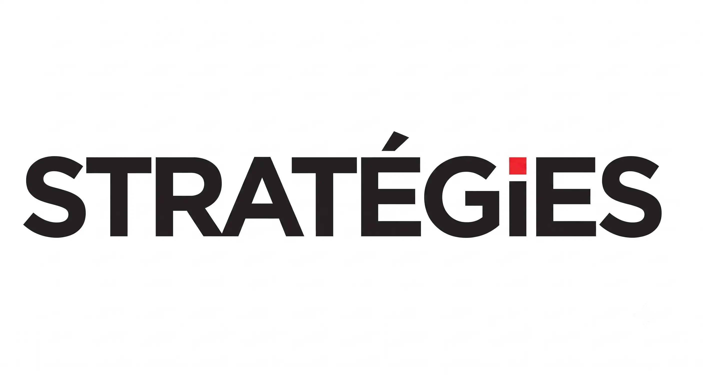
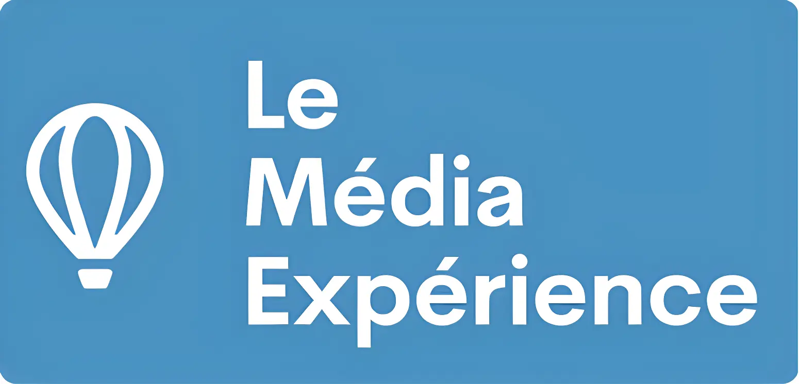
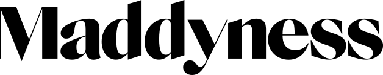

MONTAGE VIDÉO POUR CRÉATEURS & MÉDIAS
Des vidéos qui captent l'attention et font grandir votre audience.
Montage rythmé, sous-titres animés, stratégie éditoriale : Idiril Media transforme vos contenus bruts en formats qui performent sur les réseaux sociaux.
Prêt à transformer vos vidéos en machine à vues ?
Discutons de votre projet
ILS NOUS FONT CONFIANCE
Des créateurs et médias qui voient déjà les résultats

Le Média Positif
« Notre format "anniv" a dépassé 1,3M de vues avec 5,88% d'engagement. Rilès a transformé nos réels en machine à vues. »

Who's Who France
« Un montage rythmé et une écoute précise de notre ligne édito. Le retour sur investissement est immédiat. »

Stratégies Live
« En quelques semaines, nos réseaux sont repartis de zéro à 612k vues sur un seul format. »

Le Média Expérience
« Rilès a posé une vraie stratégie éditoriale avec un suivi mensuel des performances. Rigoureux et réactif. »

Christopher Wangen
« Un taux de rétention de 65% sur mes reels, du jamais vu pour mon contenu. »

Maddyness
« 4h gagnées par vidéo, sans jamais sacrifier la qualité du rendu. Un vrai gain de temps pour l'équipe. »

Authentic Creators
« Un vrai partenaire créatif : montages percutants livrés dans les temps, à chaque fois. »
Le Média Positif
« Notre format "anniv" a dépassé 1,3M de vues avec 5,88% d'engagement. Rilès a transformé nos réels en machine à vues. »
Who's Who France
« Un montage rythmé et une écoute précise de notre ligne édito. Le retour sur investissement est immédiat. »
Stratégies Live
« En quelques semaines, nos réseaux sont repartis de zéro à 612k vues sur un seul format. »
Le Média Expérience
« Rilès a posé une vraie stratégie éditoriale avec un suivi mensuel des performances. Rigoureux et réactif. »
Christopher Wangen
« Un taux de rétention de 65% sur mes reels, du jamais vu pour mon contenu. »
Maddyness
« 4h gagnées par vidéo, sans jamais sacrifier la qualité du rendu. Un vrai gain de temps pour l'équipe. »
Authentic Creators
« Un vrai partenaire créatif : montages percutants livrés dans les temps, à chaque fois. »
Envie des mêmes résultats pour votre marque ?
Discutons de votre projet
RÉSULTATS
Une croissance mesurable, mois après mois
Total des vues / mois
Oct.
Nov.
Déc.
12,5M vues en décembre
Total de l'engagement / mois
Oct.
Nov.
Déc.
400k interactions en décembre
Le Média Positif — Groupe
Contenu à fort taux de rétention pour le groupe média français indépendant à la plus forte croissance.
1,3M
vues
5,88%
engagement
4h
gagnées
340k
vues
4,2%
engagement
3h
gagnées
42,3k
vues
5,4%
engagement
4h
gagnées
StrategiesLive
Résurrection des réseaux sociaux du magazine marketing français n°1. Mise en place en équipe de la stratégie éditoriale et suivi mensuel des performances depuis le 20 octobre 2025.
184k
vues
2,71%
engagement
3h
gagnées
612k
vues
65%
rétention
4h
gagnées
110k
vues
2,2%
engagement
4h
gagnées
Voyons comment démultiplier vos performances.
Discutons de votre projet
OFFRES
Une formule pour chaque étape de votre croissance
OPTION 1
Offre Décollage
Pour les créateurs et entreprises qui se lancent, cherchent à tester un format vidéo à moindre coût et veulent un montage propre sans fioritures.
✓Montage rythmé & cuts professionnels
✓Sous-titres animés calés sur la voix
✓Habillage musical adapté au ton
✓Format vertical 9:16 optimisé réseaux
✓Idéal pour tester un format ou démarrer
LE PLUS CHOISI
OPTION 2
Offre Ascension
Pour les créateurs déjà établis qui veulent exploser leur taux de rétention, faire décoller leur visibilité et offrir un contenu ultra-dynamique à leur audience.
✓Hook visuel percutant (3 premières secondes)
✓Zooms & reframings dynamiques
✓Motion design texte & animations
✓Sound design pro
✓Sous-titres animés style Reels
✓Intégration B-roll
✓Cadrage
OPTION 3
Offre Orbite
Stratégie & production complète
Pour les médias en ligne et entreprises matures qui cherchent un partenariat long terme, une délégation totale de leur production et un pilotage par la performance.
✓Nombre de vidéos défini ensemble
✓Tous formats disponibles (Shorts, Reels, TikTok)
✓A/B Testing
✓Rapports de performances & optimisation des contenus
✓Réactivité & disponibilité prioritaires
✓Budget mensuel prévisible
✓Cadrage
Réservons un créneau pour en discuter.
Discutons de votre projet